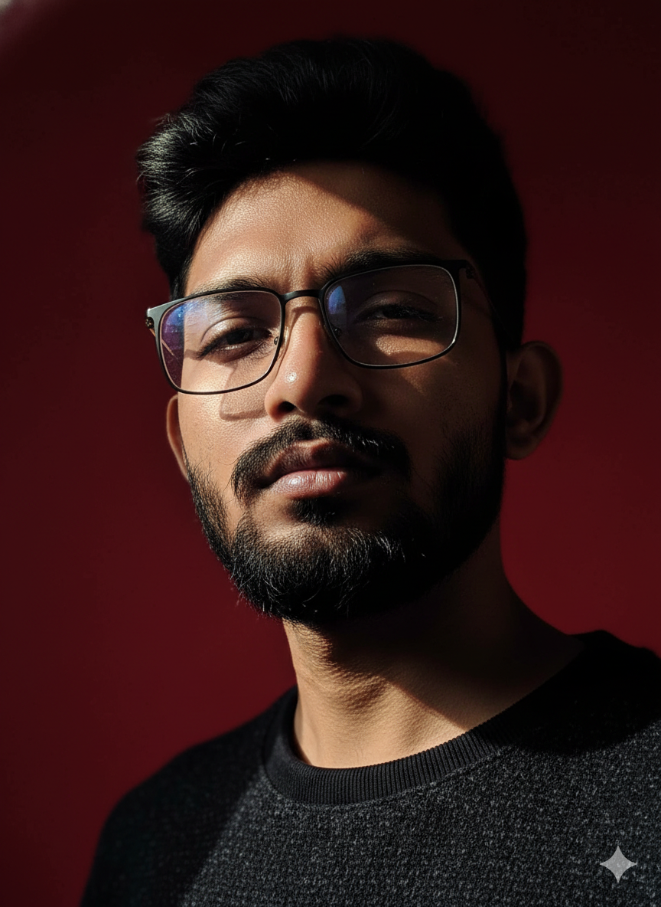

Building safer digital platforms through quality assurance, policy enforcement, stakeholder collaboration and operational excellence.

/div>I am a Trust & Safety professional currently working with Accenture in Mumbai. My experience includes content moderation quality audits, policy compliance, root cause analysis, stakeholder collaboration and process improvement.Alongside my professional journey, I am pursuing an MBA and continuously preparing myself for global opportunities.
Platform safety, policy enforcement and risk identification.
Audits, reviews and quality improvement initiatives.
Identifying quality gaps and implementing solutions.
Working across teams to improve operational excellence.
Passionate about films, storytelling and screenwriting.
Worked in Bengali television and film projects during childhood.
Love hiking, mountains and outdoor adventures.
Preparing for international opportunities and cultural exploration.